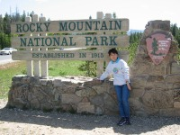
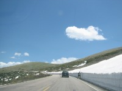
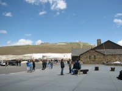
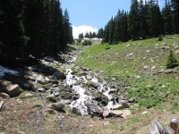
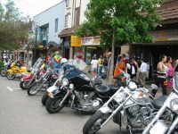

 |
Wyoming側へ抜けたかったので、Granby(西)より入園し、東へ抜けました。 |
|
ロッキーマウンテンの名に恥じない、いかにもロッキー山脈っぽい雄大な景色。 |
 |
 |
6月も末だというのに残雪がかなりあります。運転が心配なことはありません。 |
| Alpine Visitor
Center 標高3595m。この標高まで車で来れるのだから楽チン。風が強いし、寒い。 |
 |
 |
小川が綺麗なので撮ってみました。このようなちょっと気になる景色がそこらに見られるのでなかなか先に進みません。 |
| ふもとに下りてくると、バイクが溜まっていました。ここを含め、森林地帯のNPにはRV(キャンピングカー)やライダーが多いです。 |  |